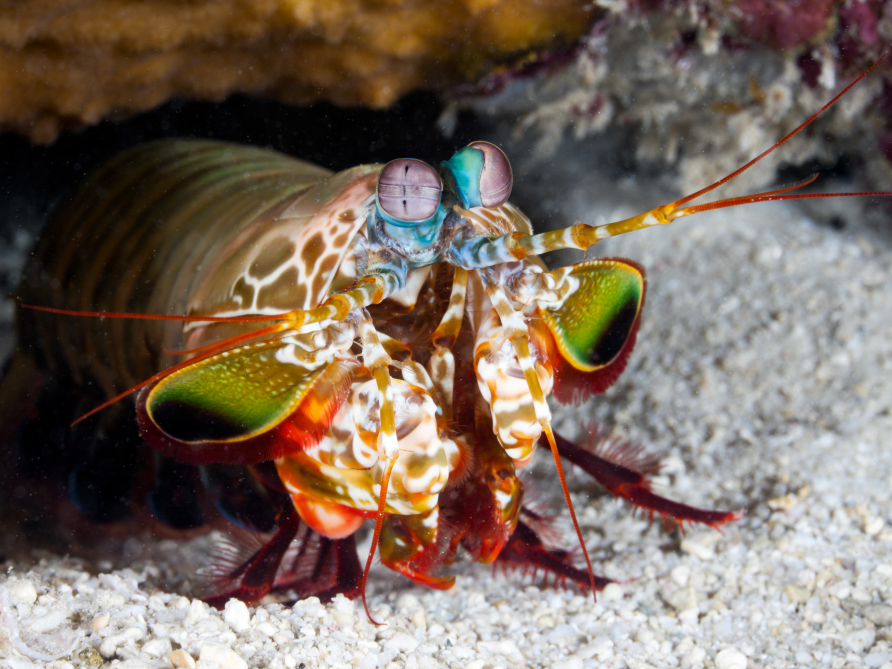

Predadores Ativos e de olho em tudo
Os estomatópodes são predadores ativos que caçam presas com o auxílio de um sentido de visão muito apurado e capaz de polarização no espectro ultravioleta e infravermelho.

Assassino Cruel
Trata-se de um verdadeiro pesadelo do fundo do mar, pois é uma das criaturas mais criativas da terra quando o assunto é violência. Suas habilidades assassinas variam desde utilizar suas presas frontais a velocidades absurdas até produzir ondas submarinas super quentes que mesmo errando o alvo são capazes de matar.
